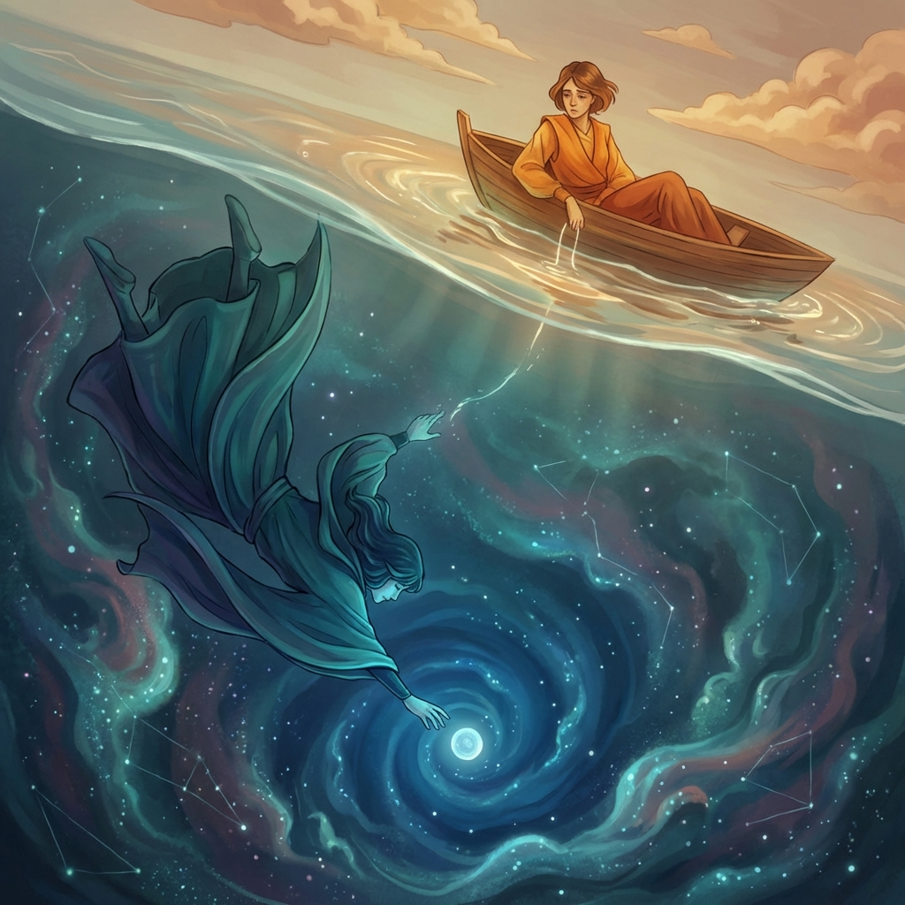
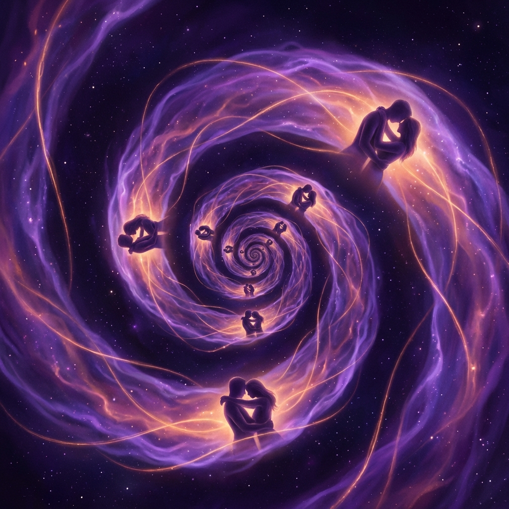
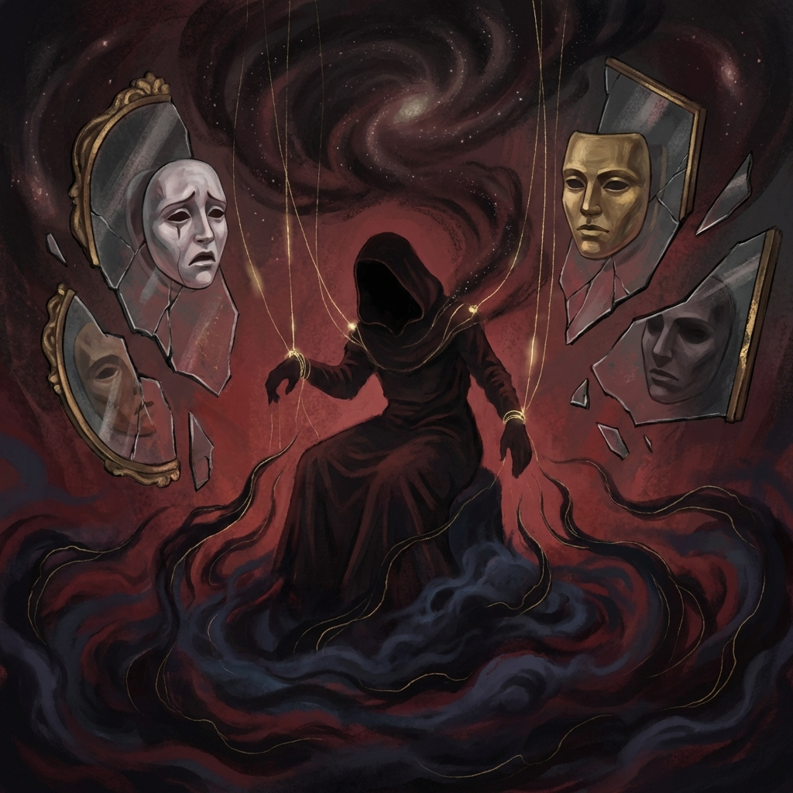
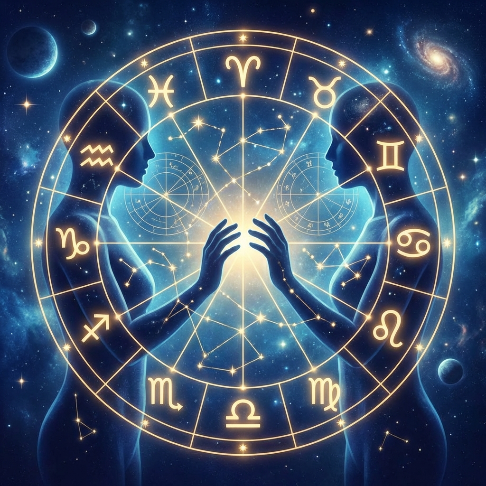
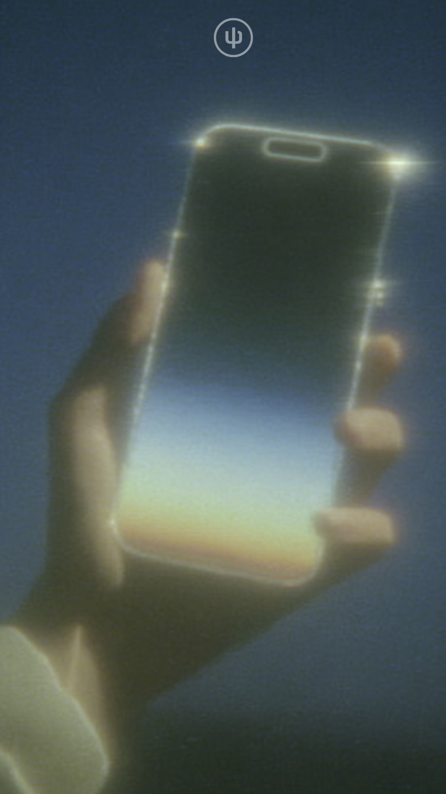

01
What kind of love do I actually want? What counts as "healthy love"?

02
Are we truly compatible? Why can't my partner resonate with my deeper emotions?

03
Why am I attracted to a certain type and keep falling into similar patterns?

04
Is my partner's controlling behavior a psychological issue or personality?

05
From astrology charts and synastry, where is our relationship heading?

Ready to Understand Your ?